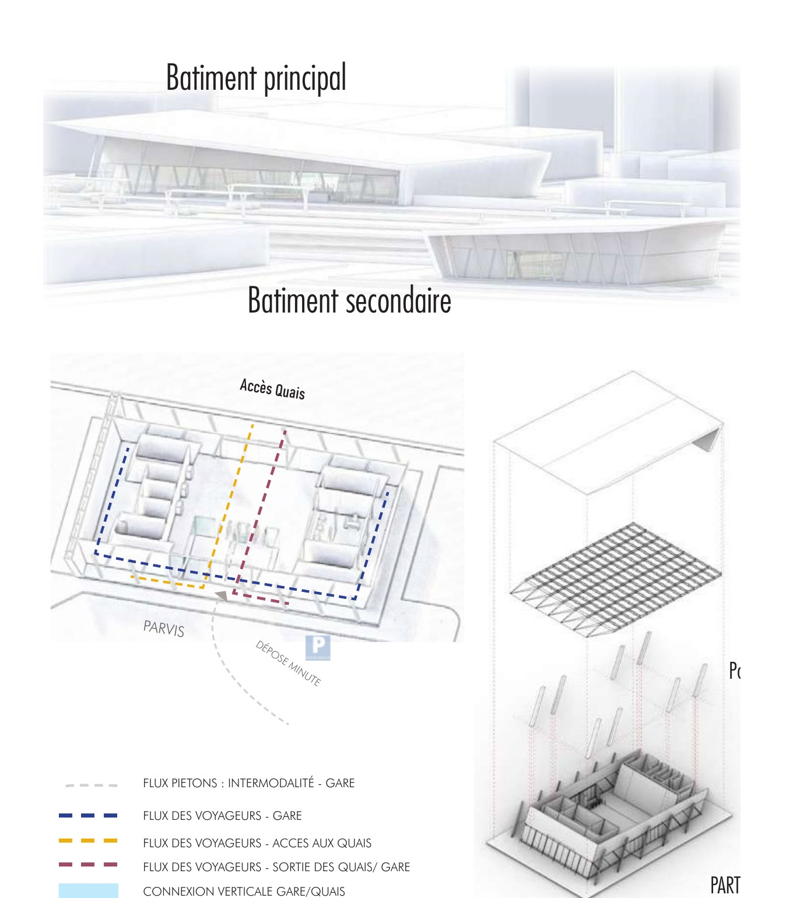
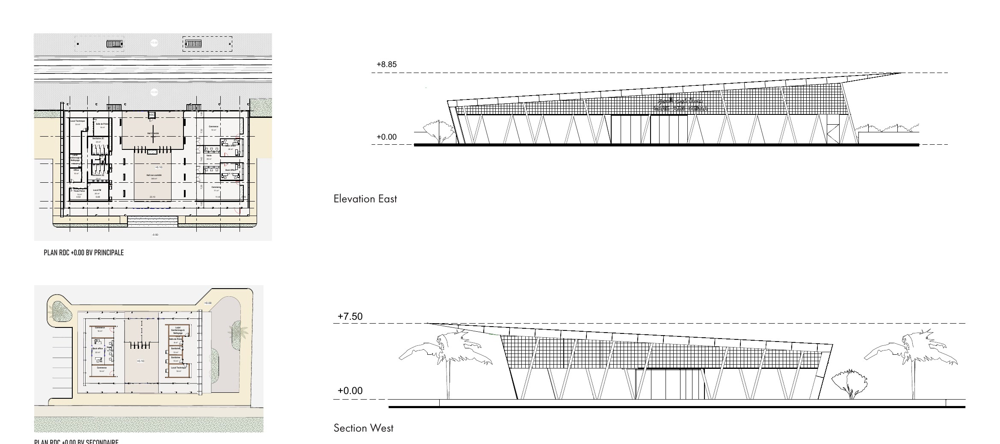
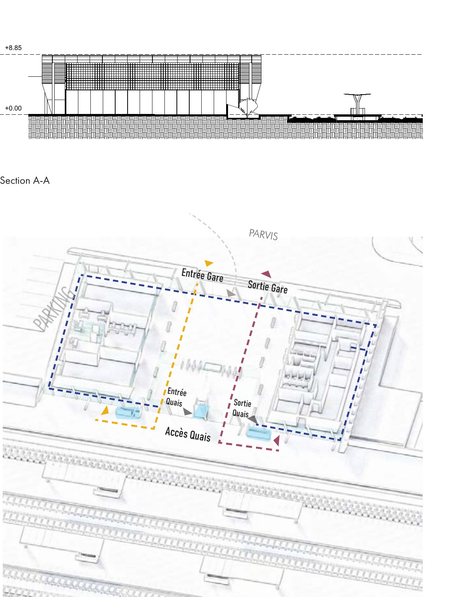

Aïn Sebaâ Station | Casablanca
The project provides for the demolition of the existing station and the construction of a new two-headed rail infrastructure, organised around a main hub located on the major axis and a secondary hub positioned on the secondary axis.
Aïn Sebaâ Station
- Location
- Casablanca, Aïn Sebaâ industrial zone
- Year
- February 2025
- Type
- Train Station | Industrial-community gateway
- Area
- 900 m²
Competition entry / Concours n°S053/PLGV / Phase II
Project
An urban footbridge will be integrated to ensure a fluid and safe connection between the two sides of the railway tracks, facilitating the movement of pedestrians and cyclists while improving intermodality with other means of transport. The platforms include underground accesses to guarantee fluid circulation and the safety of users.
The architecture of the project rests on a roof with clean lines, designed to provide optimal protection while offering a recognisable visual identity. The use of materials adapted to technical and climatic requirements guarantees the durability and efficiency of the structure.
Drawings and images
Main and secondary buildings
Fig. 1

Plans, elevation and section
Fig. 2

Section and flows
Fig. 3

Panorama
Fig. 4